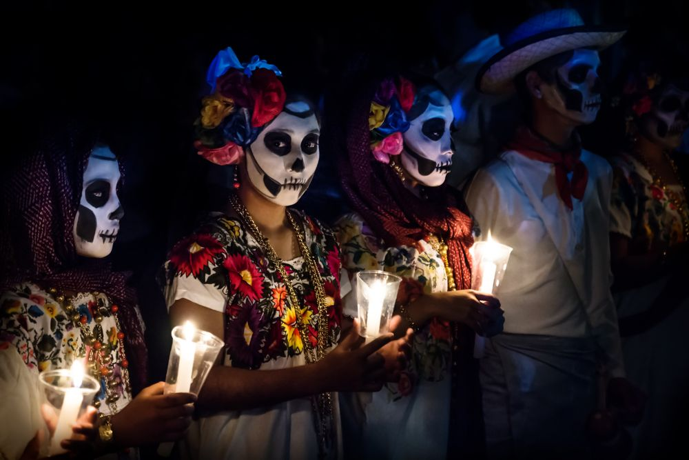
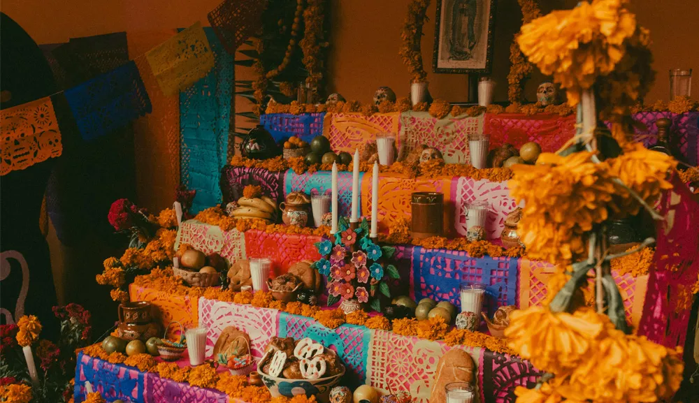
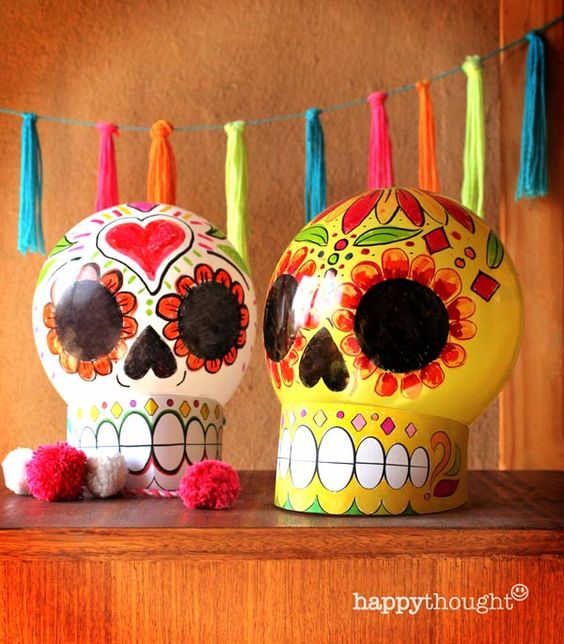
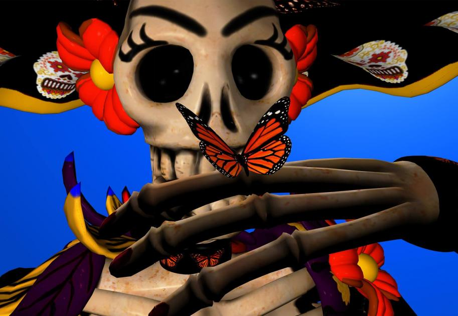
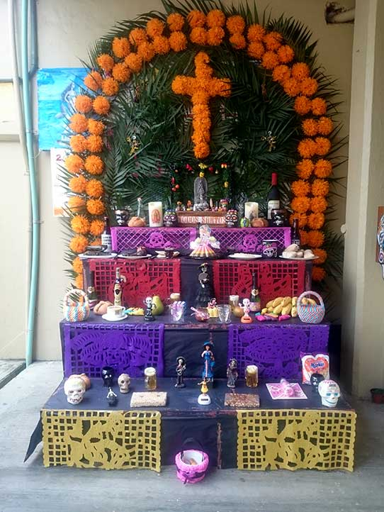
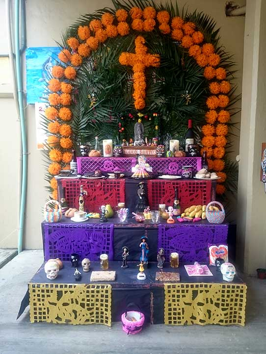
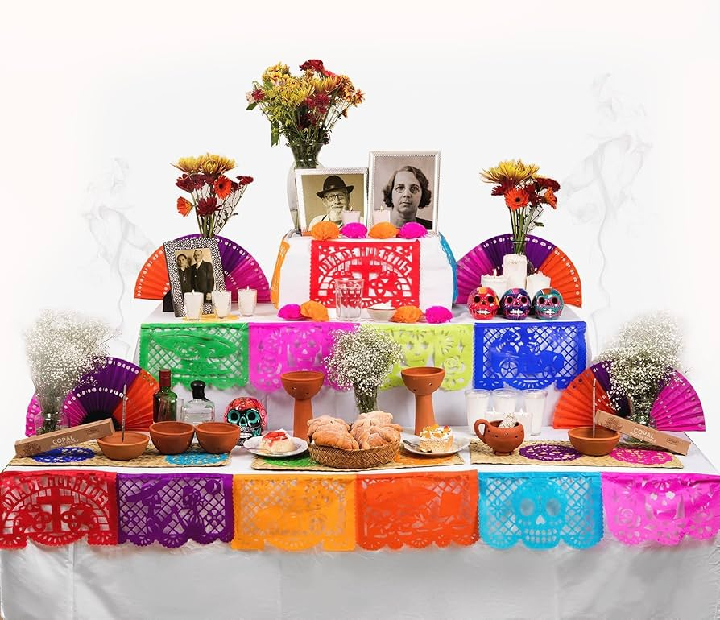
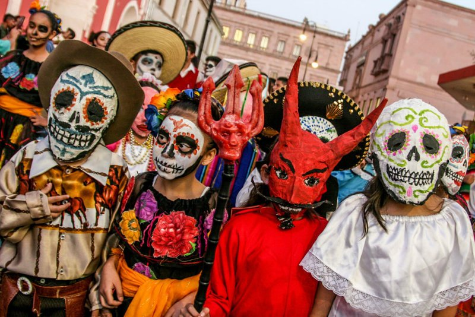

Bienvenidos al Día de Muertos
En esta página conocerás todo sobre esta tradición mexicana: su historia, cómo se celebra, dónde se originó y los lugares donde aún se festeja. ¡Explora cada sección usando el menú de arriba!
¿Qué es el Día de Muertos?
El Día de Muertos es una de las tradiciones más importantes de México. No es un día triste, sino una celebración de la vida y la memoria. La idea es que los espíritus de los familiares y amigos fallecidos regresan por unas horas para convivir con sus seres queridos. Se ponen altares decorados con flores, velas, fotos, comida y objetos que les gustaban a los difuntos. Todo esto representa el amor y el respeto hacia quienes ya no están.
 ¿Dónde nació?
El Día de Muertos tiene sus raíces en los pueblos indígenas de México, especialmente en las culturas mexica, maya y purépecha. Ellos creían que la muerte no era el final, sino el comienzo de un nuevo ciclo. Cuando los españoles llegaron en el siglo XVI, las tradiciones prehispánicas se mezclaron con las celebraciones católicas como el Día de Todos los Santos, y así nació la festividad como la conocemos hoy en día.
 ¿Cómo se celebra?
La celebración cambia según la región, pero algunos elementos son comunes en todo México. Se colocan ofrendas u altares con fotos, velas, papel picado, calaveritas de azúcar y pan de muerto. También se ponen los alimentos favoritos de los difuntos para “darles la bienvenida”. En muchos pueblos, las familias van al panteón, decoran las tumbas con flores de cempasúchil y pasan la noche ahí, conviviendo con música, comida y rezos. En las ciudades, también se hacen desfiles, concursos de catrinas y actividades culturales.
 

¿Dónde se celebra?
El Día de Muertos se celebra en todo México, desde las comunidades más pequeñas hasta las grandes ciudades. Sin embargo, hay lugares que son muy famosos por sus tradiciones, como Pátzcuaro en Michoacán, Mixquic en la Ciudad de México, Oaxaca y Janitzio. Incluso fuera de México, en países como Estados Unidos, donde hay muchas comunidades mexicanas, se hacen altares y festivales para mantener viva esta tradición.
 